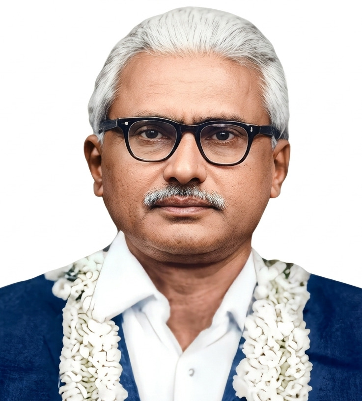

Profile at a Glance
Qualification
G.M.V.C., B.V.Sc., M.S. (USA)
Position
Professor and Head,
Department of Physiology,
Madras Veterinary College
Area of Contribution
Veterinary Physiology
Dr. Govindan Nair
G.M.V.C., B.V.Sc., M.S. (USA)
Professor and Head
Department of Physiology
Madras Veterinary College
Academic Advancement and Overseas Training
Dr. Govindan Nair was an upgraded Professor and Head of the Department of Physiology at Madras Veterinary College.
At the time when Madras Veterinary College was designated as a regional postgraduate and research centre, Dr. Nair held the qualifications G.M.V.C. and B.V.Sc.
He subsequently proceeded to the University of Wisconsin, USA, where he obtained his M.S. degree.
On his return to Madras Veterinary College, he served as Professor and Vice-Principal.
Modernising the Physiology Laboratory
The Technical Cooperation Mission (TCM) supplied several laboratory appliances to the Department of Physiology.
These instruments were designed to operate at 110 volts, whereas the local electrical supply required suitable adaptation.
A transformer arrangement was tried to enable the equipment to function, and several instruments were successfully standardised for teaching and experimental purposes.
Among the useful equipment were the heart-lung preparation machine and the pulmonary function machine.
These instruments proved highly useful for students in recording physiological responses and polygraphs.
Raising the Standard of Veterinary Physiology
Dr. Nair was a versatile and talented personality who raised the Department of Physiology to a higher academic standard in keeping with the requirements of the B.V.Sc. degree programme.
He was instrumental in strengthening both theoretical and practical teaching in Veterinary Physiology.
Laboratory Manuals for Students
Dr. Nair compiled laboratory manuals in Experimental Physiology and Physiological Chemistry for the use of students.
He was also instrumental in framing the B.V.Sc. Experimental Physiology syllabus and developing the Physiological Chemistry manual.
These manuals served as excellent practical guides for students.
Medical college professors who visited Madras Veterinary College as examiners reportedly appreciated the manuals highly and took copies for their own use.
Development of the Department
The Department of Physiology was initially functioning on the first floor of the then Small Animal Inpatient Block.
The same floor also accommodated Dobin Lecture Hall, the Experimental Physiology Laboratory and the Physiological Chemistry Laboratory.
During 1958–1959, construction of the Animal Husbandry Block was completed and the building was inaugurated by the then Chief Minister, K. Kamarajar.
The new building accommodated the Department of Animal Nutrition on the ground floor, the Department of Physiology on the first floor, and the Department of Animal Genetics on the second floor.
An Innovative and Mechanical Mind
Dr. Nair possessed an innovative personality and a distinctly mechanical mindset.
After the Department of Physiology was shifted to the Animal Husbandry Block, he allotted a small room for the establishment of a reasonably equipped workshop.
The purpose of the workshop was to design and fabricate appliances required for the further development of the Experimental Physiology Laboratory.
Dr. Nair himself worked in the workshop with the assistance of an attendant.
This initiative helped strengthen practical teaching, particularly for postgraduate students.
A Distinctive Teacher
Dr. Nair regularly taught the reproductive system to successive batches of students.
His classroom mannerisms were memorable. He had a characteristic habit of clenching his teeth while speaking and was a liberal user of the blackboard.
His teaching was systematic, disciplined and closely linked with practical physiological concepts.
Discipline and Punctuality
Dr. Nair was noted for his punctuality. He entered and left the lecture hall promptly, reflecting the discipline that characterised his academic life.
He maintained a certain professional distance from students and was regarded as a strict teacher and examiner.
On the very day of an examination, he would complete the result list and send it to the University without delay.
A Privileged Student's Recollection
I had the privilege of being his student from 1958 to 1960.
I remember Dr. Govindan Nair as a disciplined teacher, an innovative academic and a versatile physiologist who contributed substantially to the development of the Department of Physiology at Madras Veterinary College.
His efforts in modernising laboratory teaching, preparing practical manuals and strengthening experimental physiology left a lasting impression on generations of veterinary students.
Reminiscence by Dr. D. Mangalraj, Department of Physiology, Madras Veterinary College.
Audio narration will be added here when available.
Additional historical photographs will be added here.